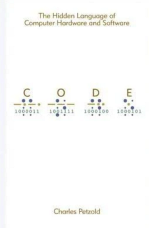
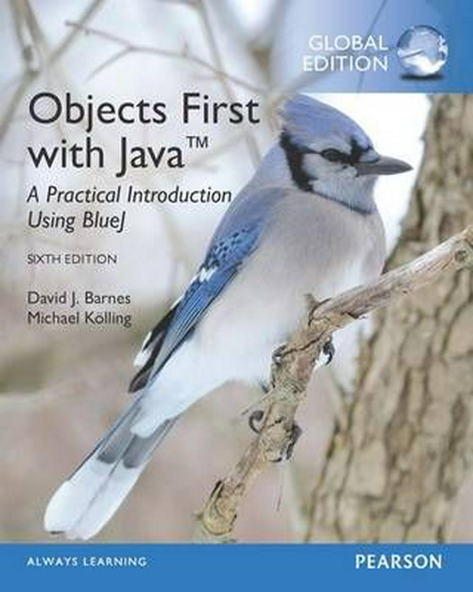

Colin McCullough CS160-162 Portfolio
CS 160 Course Description
A broad overview of the discipline of computer science. Students learn about the foundations of computer science such as problem solving and algorithms, programming concepts, and computer hardware. Students also research careers available in computer science, research pathways to computer careers, and reflect on some of the influences computers have had and continue to have on society. Students also write programs in a variety of programming languages.
CS 160 Learning Outcomes
- Describe computer science degree pathways of at least two graduate degree granting educational institutions with sufficient detail.
- Demonstrate knowledge of introductory programming concepts in at least two programming environments.
- Demonstrate knowledge of computer careers available to computer science majors (and the programming roles presented in “Dreaming in Code.”)
- Demonstrate understanding of software engineering challenges and job roles as presented in the book "Dreaming in Code."
CS160 Books


CS 161 Course Description
Overview of fundamental concepts of computer science. Introduction to programming in Java, problem solving, software engineering and object-oriented algorithm development and programming.
CS 161 Learning Outcomes
- Translate a problem statement into an appropriate algorithm containing arithmetic, relational, logical expressions, control structures, functions, and data structures.
- Translate the semantics of an algorithm into the syntax of a computer programming language, including the use of object oriented language techniques.
- Develop an object-oriented solution to a problem using classes, methods, and objects.
- Develop proper error handling for possible runtime errors.
- Develop the debugging skills to help determine errors in a computer program.
- Understand how to effectively test a solution for correctness.
- Describe a program implementation in terms of a natural language.
CS161 Books
